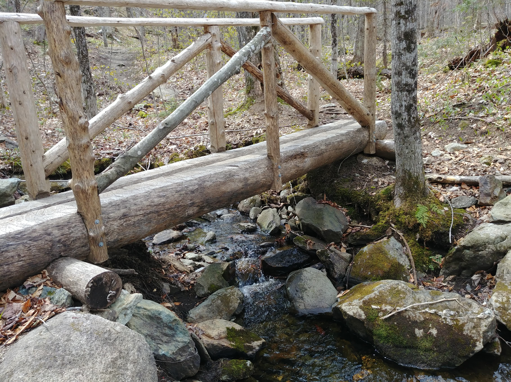
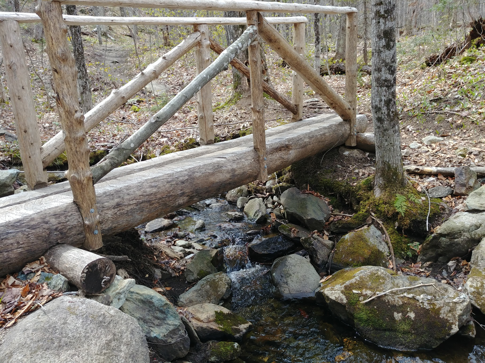
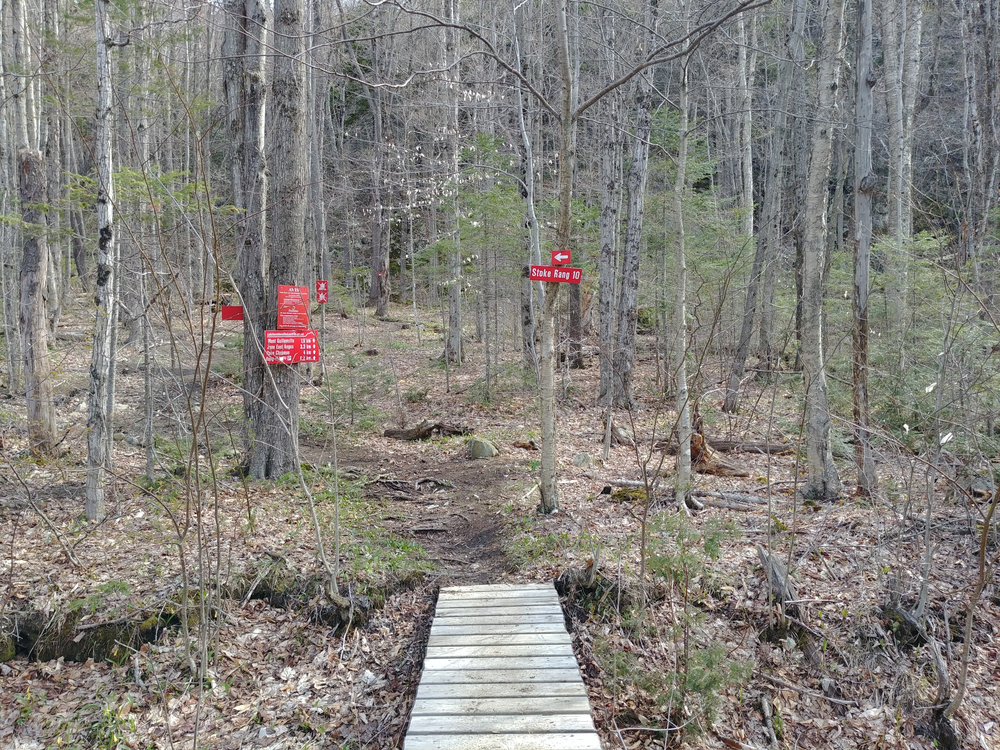

Les monts Stoke
8 mai 2021


- Longueur : 18,97 km
- Dénivelé positif : 890 m
- Point culminant : 653 m
- Vision au sommet : 180°
- Durée : 6 hours
Les monts Stokes forment une chaîne de montagnes distincte du grand sentier de randonnée des Cantons-de-l'Est. La situation géographique fait que la région est peu fréquentée par les randonneurs, ce qui offre des randonnées au calme et dans une nature qui n'a pas trop de traces humaines, presque intacte. Chose rare en Estrie...
 

Le réseau de sentiers de randonnée dans les montagnes Stoke est divisé en trois zones. La zone Chapman traverse la crête de la montagne sur une dizaine de kilomètres, offrant des points de vue et des points d'intérêt: grottes, falaises, marais, etc. Si vous tentez la traversée, le chemin des crêtes mène sur un chemin solitaire et au cœur d'une forêt sauvage. La zone Stoke s'étend sur la partie sud des montagnes, et la zone East Angus permet de rejoindre La Vallée Heureuse du Mont-Élan tout en offrant des points de vue et un joli ruisseau.


Ma randonnée s'est faite début mai; la période de dégel se terminant plus tôt qu'ailleurs dans cette région. Une journée nuageuse avec très peu de vents a rendu la marche un peu plus difficile que ce à quoi je m'attendais en raison d'une atmosphère lourde, en particulier dans les sous-bois denses par la végétation.


La randonnée débute après une marche d'approche de quelques mètres au bout du rang 10. Une fois sur le sentier, le ton est donné : terrain très accidenté ponctué de montées et de descentes raides. Les sommets ne sont malheureusement pas à la hauteur de l'effort impliqué dans l'ascension, car il y a peu ou pas de points de vue.
